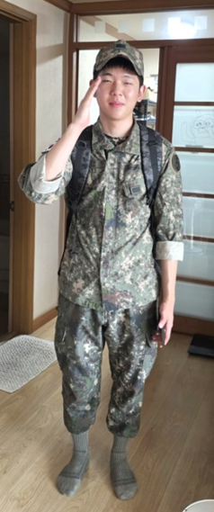
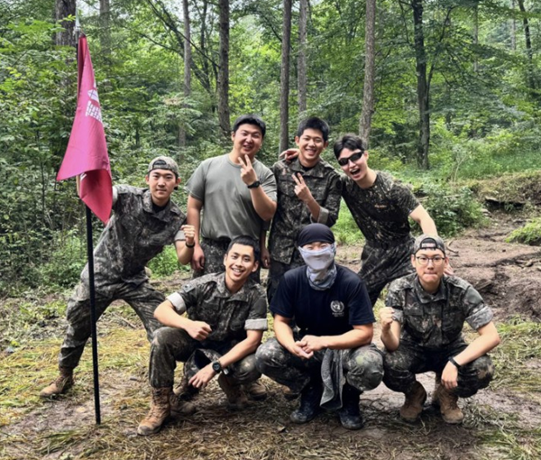

✦ RETURN TO LIFE
전역을 향해, 오늘도
전역까지 남은 날5사단 · 공병
D −—일
오늘도 전역에 한 걸음 더 가까워졌습니다.
주인공 김규식목표일 2027. 02. 10. WED
오늘의 응원FOR YOU, EVERY DAY
그날까지, 실시간 카운트다운
—DAYS
:—HOURS
:—MINUTES
:—SECONDS
달력에 동그라미 치는 날
2027. 02. 10.
수요일 · 대한민국 표준시 (KST)
A NEW CHAPTER IS COMING
김규식,
곧 우리의 일상으로.
하루하루 쌓인 시간 끝에, 기다리던 그날이 옵니다.
✦ 우리의 다음 챕터, 2027.02.10
THE DAYS WE REMEMBER늠름하게,
늠름하게,
그리고 무사히.
입던 군복은 추억이 되고
기다린 날은 일상이 됩니다.

함께여서 빛났던 날들.
함께한 시간은 오래도록, 우리의 이야기로.

☀
끝이 보인다. 조금만 더 힘내자!
기다림의 끝에서, 새로운 시작을.5사단 마크: Wikimedia Commons · 열쇠부대 모티프 / 공병 표기는 장식용
D-day는 한국 날짜 기준입니다. 실시간 카운트다운은 전역일 00:00(KST)을 기준으로 계산하며, 실제 전역 시각과는 다를 수 있습니다.